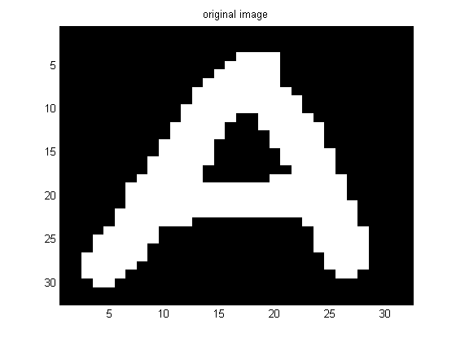
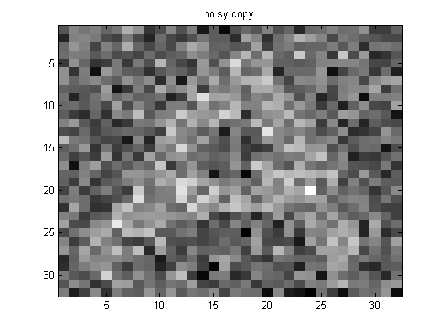
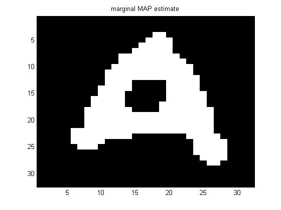

Image denoising using an mrf and approximate inference
Contents
requireImageToolbox
assert(isLibdaiInstalled);
setSeed(0);
infEngine = 'libdaibp';
sz = 32;
sigma = 1.5;
data = loadData('letterA');
img = imresize(data.A, [sz, sz], 'cubic');
[M, N] = size(img);
img = double(img);
m = mean(img(:));
imgOrig = img;
img = +1*(img>m) + -1*(img<m);
figure;
imagesc(img); colormap('gray'); title('original image');
[M, N] = size(img);
y = img + sigma*randn(M, N);
figure;
imagesc(y);colormap('gray'); title('noisy copy');
 
Create the model
sigma2 = sigma.^2;
localCPD = condGaussCpdCreate( [-1 +1], [sigma2, sigma2]);
J = 0.8;
edgePot = exp([J -J; -J J]);
nodePot = [0.5 0.5];
G = mkGrid(M, N);
model = mrfCreate(G, 'nodePots', nodePot, 'edgePots', edgePot,...
'localCPDs', localCPD, 'infEngine', infEngine);
nodeBels = mrfInferNodes(model, 'localev', rowvec(y));
maxMarginals = maxidx(tfMarg2Mat(nodeBels), [], 1) - 1;
figure;
imagesc(reshape(maxMarginals, M, N));
colormap('gray'); title('marginal MAP estimate');
